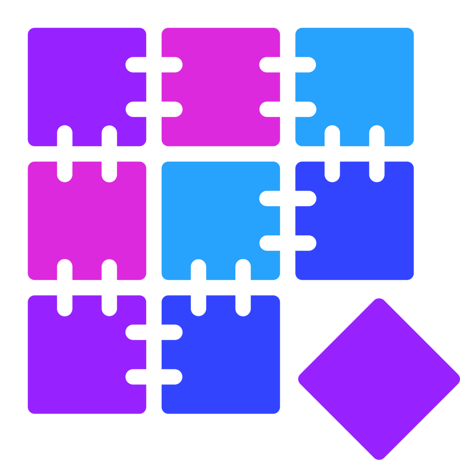

Jak nainstalovat minecraftový server
Předpoklady
- Fyzický počítač nebo VPS s operačním systémem Windows, GNU/Linux, Mac OS, FreeBSD, OpenBSD nebo Androidem
- Nejlépe alespoň 4GB RAM a procesor s dobrým jednojádrovým výkonem
- Rychlé připojení k internetu v obou směrech (nejlépe alespoň 50MB/s)
- Přístup k nastavení routeru (není nutné u VPS)
- Základní znalost příkazového řádku v operačním systému, který jste si zvolili
- Veřejnou IP adresu (pokud chcete, aby se k serveru dalo připojit z internetu)
VPS je Virtuální Privátní Server. Ten běží na fyzickém počítače v datovém centru, ale dělí se o obrovský výkon s ostatními virtuálními servery. Každý uživatel tak má část prostředků, které fyzický server nabízí.

1. Vyberte si server
Pro Minecraft existuje velké množství různých serverů, drtivá většina z nich založených na oficiálním Minecraftovém serveru napsaném v Javě. Většina těch, které na oficiálním serveru založené nejsou jsou nekompletní nebo zastaralé, většinou používané ve velmi technicky náročných scénářích, se kterými se pravděpodobně nesetkáte, proto se o nich v tomto tutoriálu nebudu zmiňovat.
Než ale začneme, musíte se rozhodnout zdali chcete aby se mohli připojit hráči s oficiálním, neupraveným klientem Minecraftu, nebo zdali chcete hrát s modifikacemi, které nejde implementovat čistě na serveru. Instalací modifikací ztratíte část potenciálních hráčů, kteří si použité modifikace nebudou ochotní nainstalovat, ale umožní vám si server více do hloubky přizpůsobit. Pro hraní s modifikacemi, které jsou nekompatibilní s oficiálním Minecraftem jsou vhodné následující servery:
- Forge - Načítač modifikací s dlouhou historií a velkou knihovnou modifikací, ale typicky pomalejším výkonem než oficiální server, zvláště u velkých modpacků, často se používá se staršími verzemi Minecraftu
- Fabric - Načítač modifikací nekompatibilní s Forge, napsaný tak, aby byl výkonnější než Forge a se správnými modifikacemi mnohem rychlejší než i oficiální server, má menší knihovnu modifikací, většina z nich pro nejnovější verzi Minecraftu 
- Quilt - Načítač modifikací založený na Fabric, aktuálně kompatibilní s ním, zatím se příliš nedoporučuje používat, jelikož je v ranné fázi vývoje


Dále existují servery, pro které není potřeba speciální klient
- Oficiální server Minecraftu - Nedoporučuje se používat kvůli špatnému výkonu, telemetrii, špatné rozšiřitelnosti a funkcím reportování hráčů
- Bukkit - Jeden z prvních neoficiálních serverů (už neaktualizovaný), zakládá se na něm Spigot, Paper, Purpur a další, které jsou s ním kompatibilní, nedoporučuje se používat kvůli jeho zastaralosti a omezenosti, na rozdíl od "modů" je rozšiřován "pluginy"
- Spigot - Založený na Bukkitu, rozšiřuje jej o dodatečné API, podporuje většinu dostupných pluginů
- Paper - Modifikace Spigotu s cílem většího výkonu a bezpečnosti, přidává další API, může být problematický pokud jde o perfektní kompatibilitu s oficiálním Minecraftem (opravuje některé chyby na kterých závisí některé redstonové stroje)
- Purpur - Další rozšíření Paperu o další API s ještě agresivnějšími optimalizacemi
- Fabric a Quilt - Pokud použijete pouze serverové modifikace, kterých je pro Fabric a Quilt velké množství, můžete dosáhnout velkých výkonů na serveru, který je velmi kompatibilní s oficiálním serverem, lze také jednoduše zamaskovat jako oficiální server
- Sponge - Alternativní server s API pro pluginy, které je modernější, ale nekompatibilní s žádným jiným načítačem pluginů, proto má menší knihovnu
Ve chvíli co jste si vybrali server, který chcete je potřeba stáhnout si jeho serverový .jar soubor. Tyto soubory lze typicky stáhnout z jejich oficiálních stránek, až na Spigot, který kvůli obavám z autorských práv vyžaduje aby si každý uživatel sám sestavil Spigot.
2. Nainstalujte Javu
Jelikož je Minecraft program založený na Javě, je potřeba nainstalovat Javu na počítač, který bude server spouštět. Toto není tak jednoduché, jak by se mohlo zdát, jelikož existuje mnoho variant Javy. Dvě hlavní jsou ty vyráběné od Oracle:
- Java SE - původní, nesvobodná, ale bezplatná verze Javy, tuto verzi má nainstalovanou většina uživatelů Windows, má delší dobu podpory než OpenJDK
- OpenJDK - výkonově a funkčně téměř identická verze Javy pod svobodnou licencí, rovněž bezplatná, tuto verzi používá oficiální Minecraftový spouštěč
Dále nabízí mnoho firem upravené verze OpenJDK s podporou srovnatelnou nebo delší než Java SE. Pro tento návod je jedno, kterou variantu využijete, ale ideálně nainstalujte pro servery pro novější verzi Minecraftu verzi 17, jelikož pro tuto verzi je Minecraft navržen a je dlouhodobě podporovaná. V tomto návodu si ukážeme jak nainstalovat OpenJDK. Tato instalace je ale jiná pro každý operační systém.
GNU/Linux
Většina distribucí GNU/Linuxu nabízí OpenJDK ve svých oficiálních repozitářích. Je proto vhodné nainstalovat OpenJDK ze svého oficiálního repozitáře. Níže jsou příkazy pro různé z nich:
- Debian, Ubuntu:
sudo apt install openjdk-17-jdk - Arch Linux:
sudo pacman -S jdk17-openjdk - Fedora:
sudo dnf install java-17-openjdk-devel.x86_64
Dříve, než tak ale učiníte je dobré aktualizovat repozitáře a systém pomocí příkazů, které se liší pro každou distribuci:
- Debian, Ubuntu:
sudo apt update && sudo apt upgrade - Arch Linux:
sudo pacman -Syu - Fedora:
sudo dnf upgrade
Dále pokud nemáte root přístup k vašemu operačnímu systému, můžete stáhnout a rozbalit Javu do vaší domovské složky z .tar.gz archivu. Jelikož se nedoporučuje stahovat verzi přímo od Oracle, v tomto tutoriálu můžete použít Adoptium JDK.
Windows
Jelikož se nedoporučuje stahovat verzi přímo od Oracle, v tomto tutoriálu můžete použít Adoptium JDK. Stránka nabízí .msi instalátor pro systémovou instalaci (doporučuje se použít, pokud máte administrátorské práva) nebo soubor .zip obsahující všechny soubory, které můžete rozbalit do domovského adresáře.
Mac OS
Pokud používáte balíčkový systém Homebrew, stačí použít příkaz
brew install openjdk@17, případně pro instalaci Homebrew příkaz
/bin/bash -c "$(curl -fsSL https://raw.githubusercontent.com/Homebrew/install/HEAD/install.sh)"
Pokud ale již máte Homebrew nainstalovaný, doporučujeme předem vše aktualizovat pomocí příkazu
brew upgrade
Pokud nechcete používat Homebrew, můžete nainstalovat z Adoptium JDK soubory .pkg pro systémovou instalaci a .tar.gz, který můžete rozbalit do domovského adresáře v systémech, na kterých nemáte administrátorský přístup.
Android
VAROVÁNÍ: I když Android technicky podporuje instalaci Javy a Minecraft Java serveru, výkon většiny Androidových zařízení není dostatečný pro jeho plynulý výkon.
Jelikož výchozí Android neobsahuje prostředí pro instalaci Javy kompatibilní s OpenJDK, musíme do zařízení toto rozumné prostředí nainstalovat. V tomto návodu použijeme Termux. Na této stránce najděte nejnovější verzi Termuxu (tu nahoře) a vyberte verzi s vaším ABI. Pokud nevíte co ABI znamená, nevadí, můžete buď stáhnout větší verzi "universal", která bude fungovat na všech zařízeních podporovaných Termuxem, můžete si tipnout, že vaše ABI bude arm64 (na většině telefonů a tabletů jsou ARM čipy), nebo si stáhnout jednu z mnoha "CPU info" aplikací, která vám tuto informaci řekne.
Jakmile budete mít soubor stažený, otevřete jej v instalátoru aplikací a nainstalujte ji. Je pravděpodobné, že si Android bude stěžovat na instalaci aplikací z neznámého zdroje, toto povolte. Jelikož je proces povolování instalace neznámých aplikací na různých zařízeních a různých verzích Androidu jiný, nebudu jej vysvětlovat.
Až budete mít na zařízení Termux nainstalovaný, otevřete jej a počkejte než stáhne svůj souborový systém. Až
dokončí práci, měli by jste se nacházet na obrazovce s terminálem. V tuto chvíli můžete zadat příkaz
pkg i -y openjdk-17, který nainstaluje Javu.
FreeBSD
FreeBSD nabízí OpenJDK ve svých repozitářích a proto se doporučuje nainstalovat příkazem
pkg install -y openjdk17. Než tak ale učiníte, použijte příkaz
pkg update && pkg upgrade k aktualizaci systému.
OpenBSD
Pokud používáte OpenBSD, zřejmě umíte taky nainstalovat OpenJDK.
3. Zkontrolujte instalaci Javy
Než budeme pokračovat, doporučujeme v terminálu vyzkoušet příkaz java --version. Pokud vám tento
příkaz vrací užitečné informace, dokončili jste proces instalace správně. Pokud příkaz nebyl nalezen i přes
dodržení návodu, znamená to, že nemáte instalaci Javy v proměnné prostředí PATH.
4. Stáhněte si server
V sekci 1. jste si vybrali minecraftový server, který chcete používat. Nyní, pokud jste si nevybrali Spigot, otevřete webovou stránku, na kterou tento návod odkazuje a stáhněte verzi serveru (bývá ve formátu Java Archive - s příponou .jar), kterou chcete používat.
Pokud příponu .jar nevidíte, zřejmě používáte operařní systém Windows a nemáte zapnuté zobrazování přípon. To můžete zapnout na Windows 10 otevřením karty Zobrazení a zaškrknutím zaškrtávacího políčka zobrazit přípony souborů. Na Windows 11 to stejné můžete najít pod tlačítkem zobrazení.
Vytvořte pak nový adresář kdekoli na počítači, kam máte přístup a právě stažený .jar soubor uložte do něj. Kvůli zbytku tutoriálu doporučujeme také soubor přejmenovat na server.jar, pokud nechcete upravovat spouštěcí shellový skript.
Pokud používáte Spigot, uložte do této složky soubor BuildTools.jar, o kterém se mluví více v další sekci.
5. Získejte Spigot
Pokud vám nevadí potenciální riziko a možná zastaralost sestavení Spigotu, který se dá stáhnout jako jakýkoli jiný server, ale od stránek třetích stran, můžete jej stáhnout na stránkách jako např. GetBukkit. Spigot totiž od originálních vývojářů nedostanete ve spustitelné formě, ale jako sérii záplat pro oficiální server. Pokud těmto stránkách nevěříte, nebo chcete verzi Spigotu, kterou tyto stránky nenabízejí, můžete udělat tyto kroky:
- Z této stránky stáhněte nejnovější verzi sestavovacích nástrojů (BuildTools.jar). Přesuňte jej do složky, kterou jste vytvořili v minulém kroku.
- Ve složce, kde jste soubor přesunuli, spusťte příkaz
java -jar BuildTools.jar --rev 1.19.4, kde 1.19.4 nahraďte verzí Minecraftu, pro kterou chcete server sestavit. - Počkejte než proces dokončí práci. Tento krok může trvat několik minut, v závislosti na výkonu a rychlosti připojení k internetu vašeho počítače.
- Na konci tohoto procesu by ve vaší složce být soubor se jménem zhruba jako spigot-1.19.4.jar. Tento soubor doporučujeme přejmenovat na server.jar, kvůli zbytku tutoriálu.
6. Spusťte server
V tuto chvíli máte stažený Minecraftový server, jeho spouštění ale není tak jednoduché, jako dvojklik, jelikož je nutné vytvořit skript, který ho spustí s parametry vhodnými pro počítač, který jej bude spouštět.
V závislosti na operačním systému bude mít skript jinou příponu, pro Windows vytvořte soubor start.bat a pro ostatní systémy vytvořte soubor start.sh. Nyní otevřete tento soubor v rozumném textovém editoru pro planý text (ne Word) pro váš operační systém.
Do tohoto souboru vložte příkaz ve tvaru java -Xms16G -Xmx16G -jar server.jar nogui, kdy
nahraďíte 16G počtem gigabytů paměti, kterou jste ochotní svému serveru přidělit a server.jar názvem souboru
serveru, doporučujeme ale použít minimálně 4.
Pokud používáte Windows, můžete nyní spustit tento skript spuštěním příkazu start ve složce, ve
které se nachází, nebo dvojklikem na něj. Pokud používáte jakýkoli jiný operační systém v tomto návodu,
musíte ještě umožnit spuštění tohoto skriptu pomocí příkazu chmod +x start.sh a spouštět ho pak
pomocí příkazu ./start.sh ve složce, kde se soubor start.sh nachází.
7. Udělte souhlas s EULA a nakonfigurujte server
Po prvním spuštěním serveru se vygeneruje několik souborů. Jeden z těchto souborů je eula.txt. Tento soubor značí, že souhlasíte s podmínkami použití serveru, které si můžete (v angličtině) přečíst zde.
Hlavní konfigurační soubor Minecraftového serveru je server.properties. Toto je jeho výchozí stav ve verzi 1.19.4:
enable-jmx-monitoring=false
rcon.port=25575
level-seed=
gamemode=survival
enable-command-block=false
enable-query=false
generator-settings={}
enforce-secure-profile=true
level-name=world
motd=A Minecraft Server
query.port=25565
pvp=true
generate-structures=true
max-chained-neighbor-updates=1000000
difficulty=easy
network-compression-threshold=256
max-tick-time=60000
require-resource-pack=false
use-native-transport=true
max-players=20
online-mode=true
enable-status=true
allow-flight=false
initial-disabled-packs=
broadcast-rcon-to-ops=true
view-distance=10
server-ip=
resource-pack-prompt=
allow-nether=true
server-port=25565
enable-rcon=false
sync-chunk-writes=true
op-permission-level=4
prevent-proxy-connections=false
hide-online-players=false
resource-pack=
entity-broadcast-range-percentage=100
simulation-distance=10
rcon.password=
player-idle-timeout=0
force-gamemode=false
rate-limit=0
hardcore=false
white-list=false
broadcast-console-to-ops=true
spawn-npcs=true
spawn-animals=true
function-permission-level=2
initial-enabled-packs=vanilla
level-type=minecraft\:normal
text-filtering-config=
spawn-monsters=true
enforce-whitelist=false
spawn-protection=16
resource-pack-sha1=
max-world-size=29999984
V tomto souboru je několik položek, které je vhodné upravit, než server spustíte.
| Jméno vlastnosti | Popis | Možné hodnoty |
|---|---|---|
| level-seed | Seed světa podle kterého se vygeneruje svět na serveru, pokud před tím neposkytnete jiný. Pokud tuto vlastnost nenastavíte, vybere se náhodné. | Jakékoli celé číslo |
| gamemode | Herní režim, ve kterém budou hráči, když se připojí | creative, survival, adventure, spectator |
| motd | Text, který hráči uvidí v seznamu serverů | Jakýkoliv text |
| pvp | Zdali mohou hráči spolu bojovat pomocí přímého poškození | true, false |
| difficulty | Úroveň obtížnosti | peaceful, easy, normal, hard |
| max-players | Maximální množství hráčů, pokud se naplní, server začne odmítat nová připojení | Jakékoli přirozené číslo |
| online-mode | Pokud vypnete, tak server nebude ověřovat přihlašovací údaje hráču, takže se budou moct připojit hráči, kteří mají pirátské kopie minecraftu. VAROVÁNÍ: Bez ověření se můžou hráči připojit s libovolným jménem, takže můžou předstírat, že jsou někým jiným. | true, false |
| view-distance | Vzdálenost po kterou bude svět posílán hráči. Pokud máte problémy s výkonem serveru, je dobré tuto hodnotu snížit. | Jakékoli přirozené číslo |
| simulation-distance | Vzdálenost po kterou bude svět simulován (budou fungovat farmy, redstone, spawnovat se mobové). Pokud máte problémy s výkonem serveru, je dobré tuto hodnotu snížit. | Jakékoli přirozené číslo |
| white-list | Pokud je zapnuto, povolí připojení jen hráčum napsaným ve souboru whitelist.txt | true, false |
| spawn-protection | Jak daleko od spawnu je svět chráněn od poničení, klidně změňte na 0 pokud chcete survival. | Jakékoli celé číslo větší než 0 |
8. Připojte se k serveru
TODO
9. Umožněte připojení se k serveru z internetu
V tuto chvíli se můžete připojit k serveru pomocí vlastního počítače a pomocí počítačů ve stejné síti jako vy. Pokud vám to stačí, můžete nyní přestat a začít hrát. V opačném případě budete potřebovat